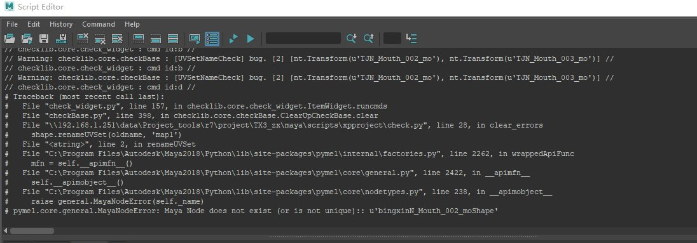

Error log
test

Run batch
from subuserlib.subcmd import CommandGroup
cmdGrp = CommandGroup()
cmdGrp.setRunModule("assembly_asset_test")
cmdGrp.setName('test')
cmdGrp.addMayabatch(config={'source_file': source_file})
cmdGrp.run()
markdownlib.discuss.Discuss2Markdown.report
Traceback (most recent call last): File "texteditor.py", line 59, in markdownlib.texteditor.TextEdit.report File "discuss.py", line 164, in markdownlib.discuss.Discuss2Markdown.report File "C:\Program Files\Autodesk\Maya2018\bin\python27.zip\os.py", line 157, in makedirs WindowsError: [Error 5] : u'Q:/XX/.data/info/asset/files/char/c001001test/.type/look/v001/discuss'
xpmanager.detail_file.read_source_data
Traceback (most recent call last): File "item_model.py", line 190, in xpexplorer.item_model.DataModel.updateExtendRows File "row.py", line 248, in xpexplorer.row.Row.update File "row.py", line 480, in xpexplorer.row.Row.reload File "detail_file.py", line 87, in xpmanager.detail_file.DataFile.read File "detail_file.py", line 31, in xpmanager.detail_file.DataFile.read_source_data File "detail_file.py", line 127, in xpmanager.detail_file.read_source_data File "detail_file.py", line 170, in xpmanager.detail_file.read_source_data File "C:\Program Files\Autodesk\Maya2018\bin\python27.zip\shutil.py", line 130, in copy2 File "C:\Program Files\Autodesk\Maya2018\bin\python27.zip\shutil.py", line 83, in copyfile IOError: [Errno 13] Permission denied: u'Q:/XX/.data/info/asset/files/char/c003010box/.type/look/v001/icon.png'
xpexplorer.database.Database.save
Traceback (most recent call last): File "shot_build.py", line 100, in xpmanager.pp_work.shot_build.ShotBuild.start_build File "shot_build.py", line 162, in xpmanager.pp_work.shot_build.ShotBuild.build_cmd File "shot_build.py", line 209, in xpmanager.pp_work.shot_build.ShotBuild.build_from_config File "shot_build.py", line 218, in xpmanager.pp_work.shot_build.ShotBuild.run_batch_build File "run_build.py", line 43, in xputil.run_build.runBatchOpt File "database.py", line 24, in xpexplorer.database.Database.editData File "database.py", line 41, in xpexplorer.database.Database.save IOError: [Errno 13] Permission denied: u'X:/TPZ/.data/info/task/207/data.json'
Traceback (most recent call last): File "shot_build.py", line 94, in xpmanager.pp_work.shot_build.ShotBuild.start_build File "shot_build.py", line 156, in xpmanager.pp_work.shot_build.ShotBuild.build_cmd File "shot_build.py", line 194, in xpmanager.pp_work.shot_build.ShotBuild.build_from_config File "detail_loader.py", line 438, in xpmanager.detail_loader.DetailLoader.create_task_datafile IOError: [Errno 2] No such file or directory: u'X:/TPZ/.data/info/task/191/data.json'
raceback (most recent call last): File "shot_build.py", line 94, in xpmanager.pp_work.shot_build.ShotBuild.start_build File "shot_build.py", line 156, in xpmanager.pp_work.shot_build.ShotBuild.build_cmd File "shot_build.py", line 198, in xpmanager.pp_work.shot_build.ShotBuild.build_from_config File "shot_build.py", line 87, in xpmanager.pp_work.shot_build.ShotBuild.save_run_config_file IOError: [Errno 2] No such file or directory: u'X:/TPZ/.data/info/task/207/run_config.json'
Traceback (most recent call last): File "header_view.py", line 188, in xpexplorer.header_view.HeaderControl.append_section File "loader.py", line 255, in xpexplorer.loader.Loader.append_column File "user_config.py", line 30, in xpexplorer.user_config.UserConfig.append File "user_config.py", line 60, in xpexplorer.user_config.UserConfig.save IOError: [Errno 13] Permission denied: u'X:/TPZ/.data/info/shot/user_yyy__column.json'